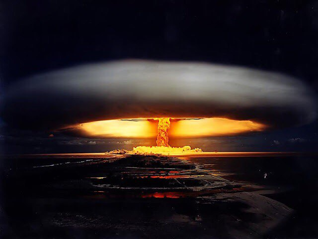

Это анонс страницы. Можете перейти сразу к разделам:
Анонс раздела 1: из истории Царь-бомбы.
Разработка термоядерного устройства по кодовым названием «Иван» была начата в середине 1950-х годов группой физиков под руководством академика Курчатова. В группу, занимавшуюся данным проектом, входили Андрей Сахаров, Виктор Адамский, Юрий Бабаев, Юрий Трунов и Юрий Смирнов.
В ходе исследовательских работ учёные также пытались нащупать пределы максимальной мощности термоядерного взрывного устройства.Проектные изыскания длились в течение нескольких лет, а финальный этап разработки «изделия 602» пришёлся на 1961 год и занял 112 дней.
Бомба АН602 имела трёхступенчатую конструкцию: ядерный заряд первой ступени (расчётный вклад в мощность взрыва — 1,5 мегатонны) запускал термоядерную реакцию во второй ступени (вклад в мощность взрыва — 50 мегатонн), а она, в свою очередь, инициировала так называемую ядерную «реакцию Джекилла-Хайда» (деление ядер в блоках урана-238 под действием быстрых нейтронов, образующихся в результате реакции термоядерного синтеза) в третьей ступени (ещё 50 мегатонн мощности), так что общая расчётная мощность АН602 составляла 101,5 мегатонн.
Анонс раздела 2: Испытание Царь-бомбы.
Испытания бомбы состоялись 30 октября 1961 года. Подготовленный Ту-95В с реальной бомбой на борту вылетел с аэродрома Оленья и взял курс на Новую Землю. В испытаниях участвовал также самолёт-лаборатория Ту-16А. Через 2 часа после вылета бомба была сброшена с высоты 10 500 метров на парашютной системе по условной цели в пределах ядерного полигона «Сухой Нос». Бомба опускалась на основном парашюте площадью 1600 м², общая масса парашютной системы составляла 800 кг.
Подрыв бомбы был осуществлён барометрически в 11 часов 33 минуты, через 188 секунд после сброса на высоте 4200 м над уровнем моря (4000 м над целью) (однако есть и другие данные о высоте взрыва — в частности, назывались числа 3700 м над целью (3900 м над уровнем моря) и 4500 м). Самолёт-носитель к моменту взрыва успел улететь на расстояние 39 км, а лаборатория ещё дальше — примерно на 53,5 км. Ударная волна догнала самолет-носитель на удалении 115 км, действие ударной волны от взрыва ощущалось в виде вибрации и не повлияло на режим полета самолёта.Самолет-лаборатория к моменту прихода ударной волны был на расстоянии 205 км от места взрыва. Мощность взрыва заметно превысила расчётную (51,5 мегатонн) и составила 58,6 мегатонн в тротиловом эквиваленте. Есть сведения, что по первоначальным данным мощность взрыва АН602 была существенно завышена и оценивалась величинами до 75 мегатонн.
Место, где было проведено испытание